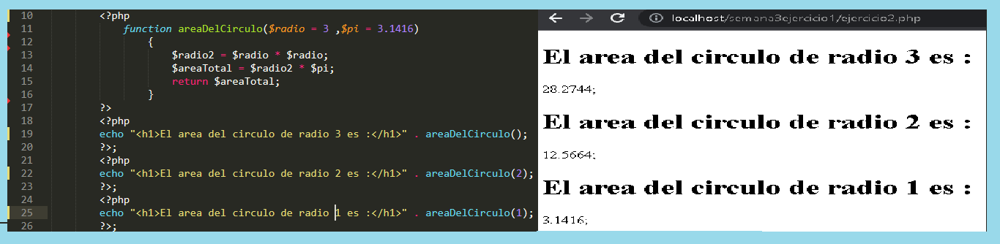

RAZÓN 5: Facilidad a la hora de hacer modificaciones
si en algun moneto necesitamos cambiar el las tareas que se ejecutan en la plataforma solo necesitariamos cambiar unas cuantas funciones por otras sin requerir modificar todo el código.
s
IR AL INICIO
ANTERIOR
SIGUIENTE